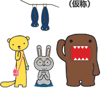

■
ジャンル：アクション他
■
発売予定日：2002年春
■
希望小売価格：未定
こわれたアンテナのかけらを探すため、大好きなテレビの世界に旅立ったどーもくん。もとの世界に戻るため、いろいろなテレビ番組に出演して、なくなったアンテナのかけらを集めることに。どーもくんの参加する番組は、どれもこれも実際にテレビで見たことがあるものばかり。ニュースに大相撲、野球などなど。見慣れた画面にどーもくんというインパクト特大のキャラクターが登場するミスマッチ感が、たまらずユカイなのだ。
テレビの世界では、番組表からどーもくんの出演する番組を選ぶ。アンテナの部品を集めれば、新番組も登場！
出演する番組に合わせて、どーもくんの装いも一変。宇宙服を着たどーもくん、まわしをつけたどーもくん、寿司職人のどーもくんなど、たくさんのどーもくんが登場。どれも思わずなごんでしまうビジュアルだ。
2001 Nintendo/SUZAK Character
NHK・TYO